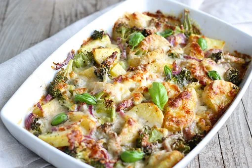

Sebze sevenlerin karşı koyamadığı bir lezzet.. Patatesin ve brokolinin aynı tabakta buluştuğu bu yemek her lokmada ayrı sevdiriyor. Şimdiden kolay gelsin ve afiyet olsun...

Fırında patatesli brokoli
Malzemeler
- 1 bütün brokoli
- 2 yemek kaşığı un"
- 2-3 adet patates
- Rendelenmiş kaşar
- 2 su bardağı süt
- 1 yemek kaşığı tereyağ
- Karabiber
- Tuz
Nasıl yapılır?
- Önce brokoli ve patatesleri haşlıyoruz. İkisininde haşlanma suresi farklı olduğu için patatesi daha çok brokoliyi daha az haşlıyoruz.
- Haşlanmış sebzelerimizi bir borcama alıyoruz. /li>
- Beşamel sosu hazırlıyoruz ve haşlanmış brokoli ve patateslerin üzerine gezdiriyoruz.
- En üstüne de rendelenmiş kaşarı dağıtıyoruz.
- 180 dereceli fırında kasar peyniri kızarana kadar pişiriyoruz.
AFİYET OLSUN